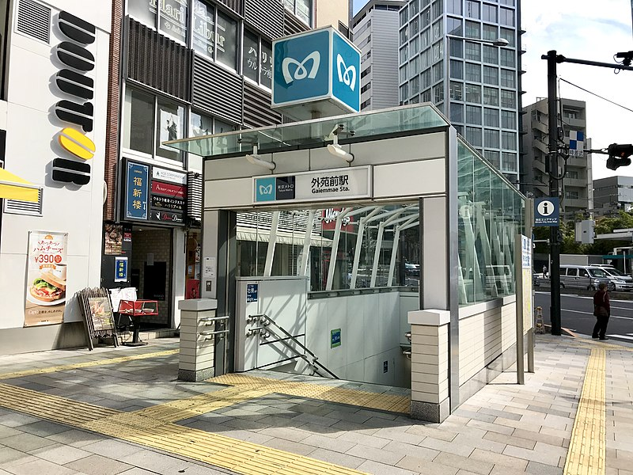
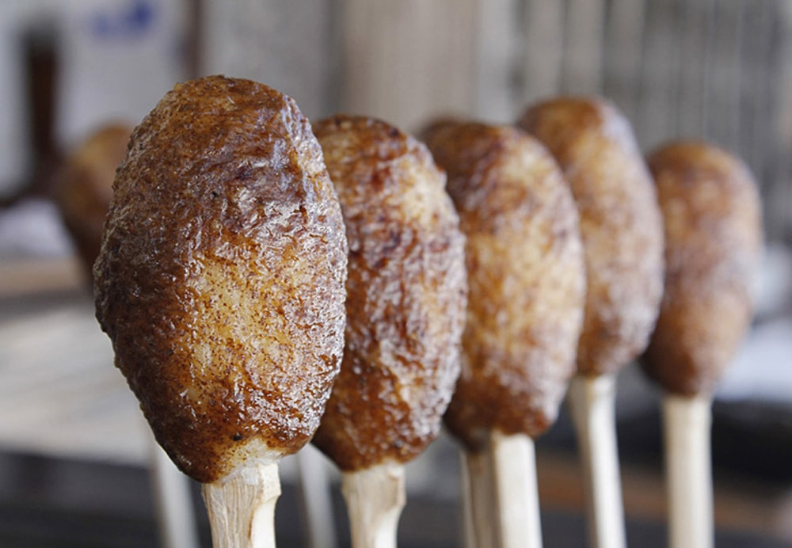

1. 観戦の醍醐味は「スタジアム飯」と「周辺グルメ」！
お待たせいたしました！読者の皆様からの熱いご要望にお応えし、「リーグワン Division 1」全チームの主要スタジアムを網羅した完全版へアップデートしました。Div2・Div3特集も現在鋭意制作中です！
ラグビー観戦の楽しみは、試合の80分間だけではありません。スタジアムに向かう道中で地元の名物を食べ歩いたり、試合後に仲間と美酒を交わしたりする時間こそが、最高のアウェー遠征の醍醐味ですよね！
今回は、Division 1の熱戦が繰り広げられる全主要スタジアムの歴史や情報とともに、絶対に外せない周辺グルメ＆観光地をご紹介します。
2. 熊谷ラグビー場（埼玉パナソニックワイルドナイツ）
| 所在地 | 埼玉県熊谷市 | 収容人数 | 約24,000人 |
|---|---|---|---|
| 歴史・特徴 | 「東のラグビーの聖地」。ピッチと客席の近さは国内トップクラス。 | ||

もっちりとしたコシがたまらない名物「熊谷うどん」
【周辺グルメ＆観光】
熊谷といえば、何と言っても「熊谷うどん」！武蔵野うどんの流れを汲むコシの強い麺を温かい肉汁につけて食べるスタイルが絶品です。夏場の観戦なら名物「雪くま（ご当地かき氷）」も外せません。
3. 秩父宮ラグビー場（東京SG、東芝BL東京など）
| 所在地 | 東京都港区北青山 | 収容人数 | 約24,000人 |
|---|---|---|---|
| 歴史・特徴 | 「日本ラグビーの聖地」。外苑前駅から徒歩5分という奇跡的な都心立地を誇る。 | ||

外苑前周辺はおしゃれなカフェやパブが立ち並ぶ
【周辺グルメ＆観光】
外苑前という立地柄、周辺にはおしゃれなカフェがひしめき合っています。「シェイクシャック 外苑いちょう並木店」でテイクアウトして向かうのが定番。スタジアム内の「秩父宮ラグビーまん」も必食です。
4. 豊田スタジアム（トヨタヴェルブリッツ）
| 所在地 | 愛知県豊田市 | 収容人数 | 約44,000人 |
|---|---|---|---|
| 歴史・特徴 | 球技専用スタジアムとして国内最大級。傾斜の急なスタンドからの見晴らしは圧巻。 | ||

香ばしい味噌の香りが食欲をそそる「五平餅」
【周辺グルメ＆観光】
豊田に来たら絶対に食べたいのが「五平餅」。香ばしい味噌の匂いが食欲をそそります。試合日に開催される「ヴェルブリッツマルシェ」でお祭り騒ぎを楽しむのがおすすめです。
5. 江戸川区陸上競技場（クボタスピアーズ船橋・東京ベイ）
| 所在地 | 東京都江戸川区 | 収容人数 | 約7,000人 |
|---|---|---|---|
| 歴史・特徴 | オレンジアーミーが集う熱狂のホーム。アットホームな雰囲気が魅力。 | ||

オレンジ色に染まるスタジアム前の充実したキッチンカー
【周辺グルメ＆観光】
スピアーズのホームゲームは「スタグル（スタジアムグルメ）」の充実度がリーグ屈指！多数のキッチンカーが並び、クラフトビールやボリューム満点の肉料理が楽しめます。最寄り駅の西葛西周辺には本格的なインドカレーの名店が多く、試合後のカレー巡りも大人気です。
6. ニッパツ三ツ沢球技場（横浜キヤノンイーグルス）
| 所在地 | 神奈川県横浜市 | 収容人数 | 約15,000人 |
|---|---|---|---|
| 歴史・特徴 | ピッチとスタンドの距離が非常に近く、選手の声や激しいコンタクト音が直接響く。 | ||

横浜といえば崎陽軒のシウマイと中華街グルメ
【周辺グルメ＆観光】
横浜での観戦のお供は、やはり「崎陽軒のシウマイ弁当」！横浜駅で調達してスタジアムで食べるのが王道です。試合後は横浜中華街に足を運び、本格的な点心やビールで祝杯をあげるのが最高の週末ルートです。
7. 駒沢オリンピック公園総合運動場（リコーブラックラムズ東京）
| 所在地 | 東京都世田谷区 | 収容人数 | 約20,000人 |
|---|---|---|---|
| 歴史・特徴 | 東京オリンピックのレガシー。広大な緑豊かな公園内に位置する。 | ||

駒沢公園周辺は絶品ベーカリーの激戦区
【周辺グルメ＆観光】
駒沢公園周辺は「おしゃれなベーカリーとカフェ」の宝庫。試合前にお気に入りのパンとコーヒーをテイクアウトして、公園のベンチでリラックスしてからスタジアム入りするのが世田谷スタイルです。スタジアム内でのブラックラムズ名物「ラム肉料理」も見逃せません。
8. 相模原ギオンスタジアム（三菱重工相模原ダイナボアーズ）
| 所在地 | 神奈川県相模原市 | 収容人数 | 約15,000人 |
|---|---|---|---|
| 歴史・特徴 | 自然豊かな公園内にあり、ダイナボアーズのチームカラー一色に染まる。 | ||

冷えた体を温める相模原エリアの濃厚ラーメン
【周辺グルメ＆観光】
スタジアム周辺や相模原市内は「ラーメン激戦区」として有名。冷たい風が吹く冬のラグビー観戦後に食べる熱々の家系ラーメンや地元名店の濃厚な一杯は格別です。スタジアムのダイナボアーズ屋台村で振る舞われる地元B級グルメも充実しています。
9. ヤマハスタジアム（静岡ブルーレヴズ）
| 所在地 | 静岡県磐田市 | 収容人数 | 約15,000人 |
|---|---|---|---|
| 歴史・特徴 | 日本有数の臨場感。熱狂的なファンが作り出すホームの空気感は圧巻。 | ||

静岡県民のソウルフード、げんこつハンバーグ
【周辺グルメ＆観光】
静岡遠征で絶対に外せないのが「炭焼きレストランさわやか」のげんこつハンバーグ！アウェーサポーターも必ず立ち寄る名所です。また、磐田・浜松エリアならではの「浜松餃子」もビールとの相性抜群で試合後の宴会に最適です。
10. 三重交通G スポーツの杜 鈴鹿（三重ホンダヒート）
| 所在地 | 三重県鈴鹿市 | 収容人数 | 約12,000人 |
|---|---|---|---|
| 歴史・特徴 | モータースポーツの聖地・鈴鹿に根付く、ヒートの熱いホームグラウンド。 | ||

ニンニクと濃いタレがたまらない「四日市とんてき」
【周辺グルメ＆観光】
スタジアム周辺の三重県北勢エリアのガッツリ飯といえば「四日市とんてき」！分厚い豚肉をニンニクの効いた濃いめのタレで焼き上げた一皿は、スタミナ満点で観戦前のエネルギーチャージにぴったりです。お土産には鈴鹿名物「鈴鹿抹茶」を使ったスイーツもおすすめ。
11. 東大阪市花園ラグビー場（花園近鉄ライナーズ）
| 所在地 | 大阪府東大阪市 | 収容人数 | 約26,000人 |
|---|---|---|---|
| 歴史・特徴 | 1929年開場。「西の聖地」として全国のラグビーファンから愛される歴史的スタジアム。 | ||

ラグビーボールの形をした「東大阪カレーパン」
【周辺グルメ＆観光】
花園の名物といえばラグビーの街・東大阪が誇る「東大阪カレーパン」。ラグビーボール型に揚げられたカレーパンは食べ歩きに最適です。もちろん大阪ならではの「たこ焼き」「お好み焼き」といった粉もんグルメもスタジアム内外で存分に味わえます。
12. ノエビアスタジアム神戸（コベルコ神戸スティーラーズ）
| 所在地 | 兵庫県神戸市 | 収容人数 | 約30,000人 |
|---|---|---|---|
| 歴史・特徴 | 開閉式屋根を持つ全天候型スタジアム。どの席からも見やすい素晴らしい観戦環境。 | ||

下町情緒あふれる神戸名物「そばめし」
【周辺グルメ＆観光】
港町・神戸はグルメの宝庫！スタジアムのある和田岬エリアや長田区周辺では、ソースの香りがたまらない「そばめし」や「ぼっかけ（牛すじとこんにゃくの煮込み）」が絶品です。少し贅沢に「神戸牛」のステーキを楽しんだり、南京町で中華を堪能するのも最高のアウェー遠征になります。
13. まとめ
スタジアム観戦の魅力は、迫力あるプレーはもちろんですが、その土地ならではの食や文化に触れることにもあります。「ラグビー×ご当地グルメ」は最高のエンターテインメント！
リーグワンのDivision 1は、北は関東から西は関西まで、個性豊かなスタジアムと絶品グルメが揃っています。次の週末は、ぜひ少し早めにスタジアムへ足を運び、美味しいグルメでお腹を満たしてから、全力で推しチームの応援を楽しんでみてくださいね。